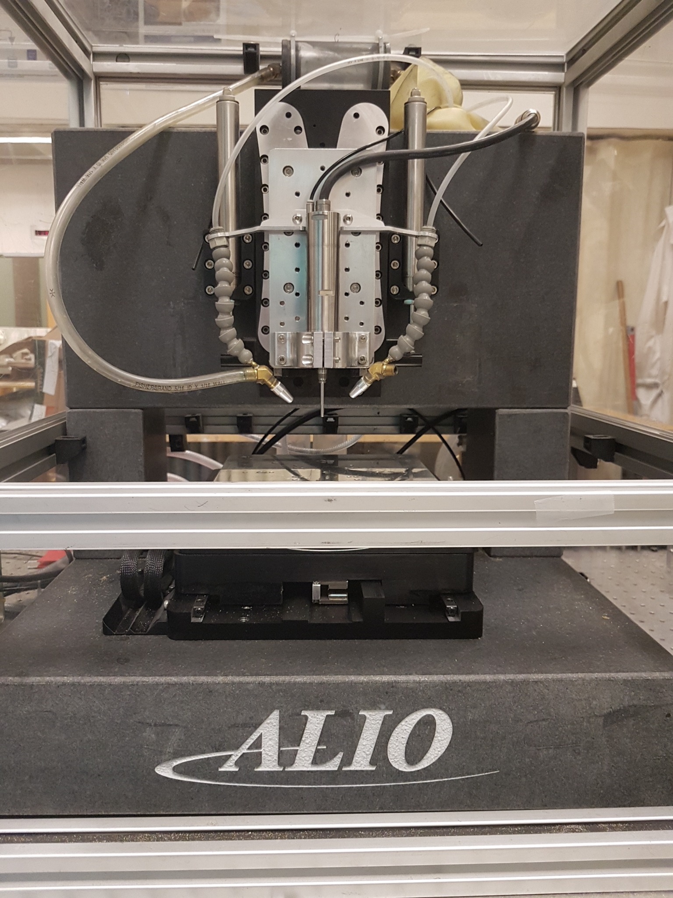
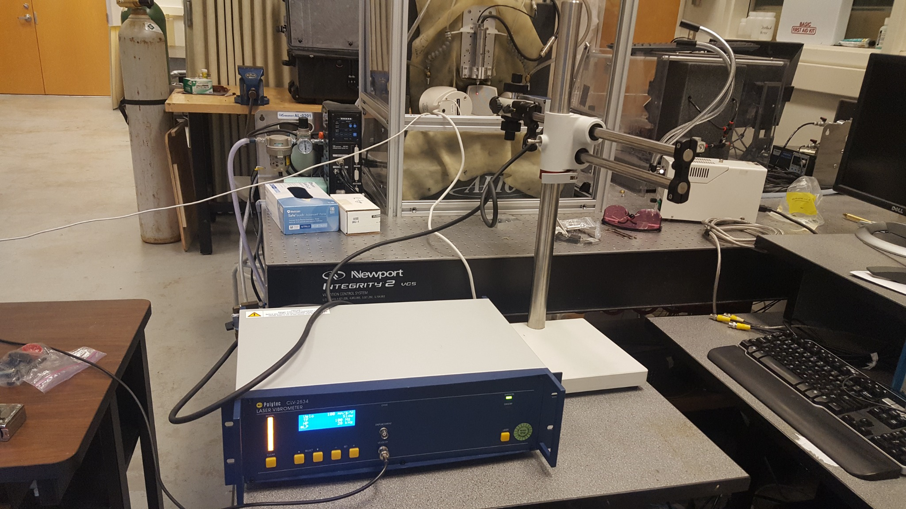
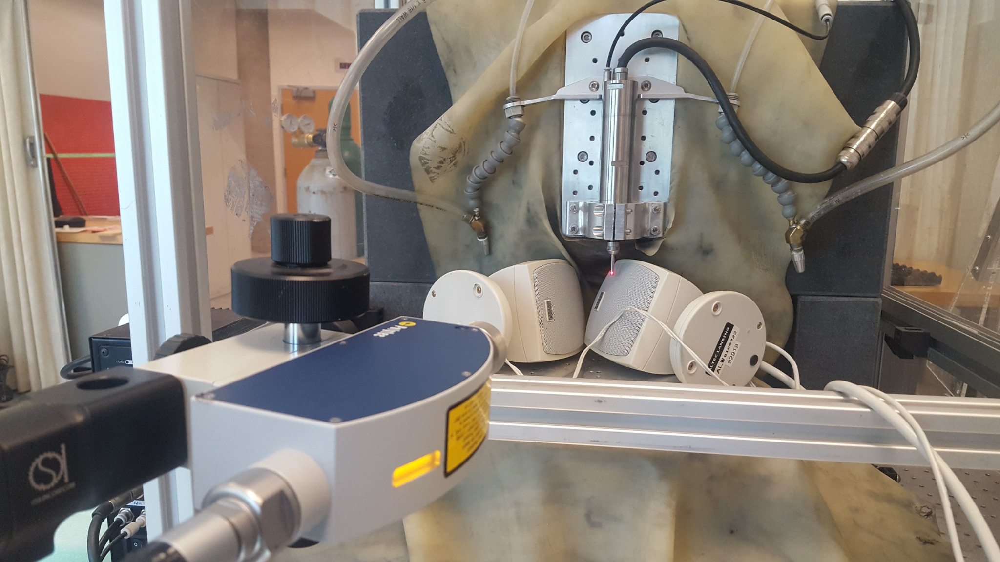
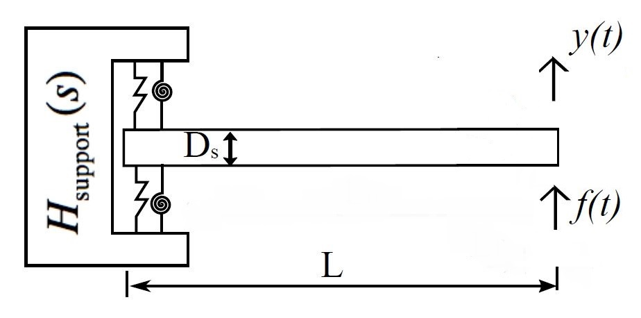
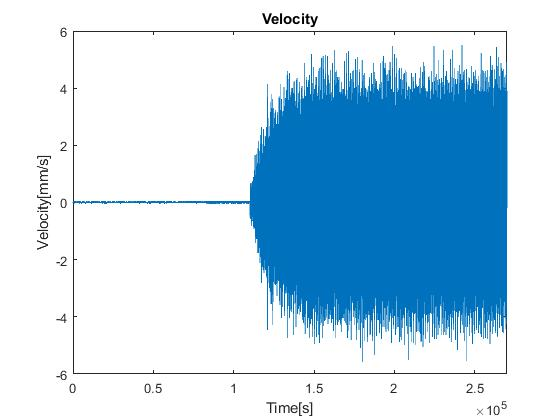
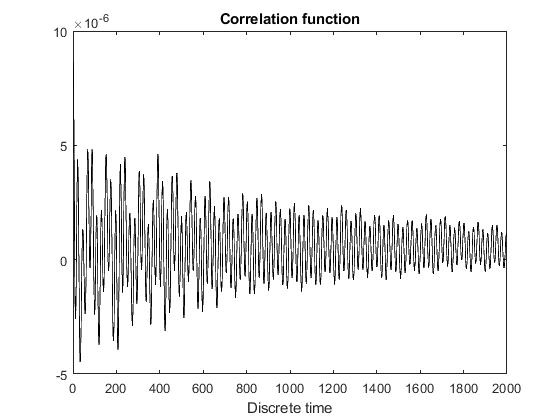
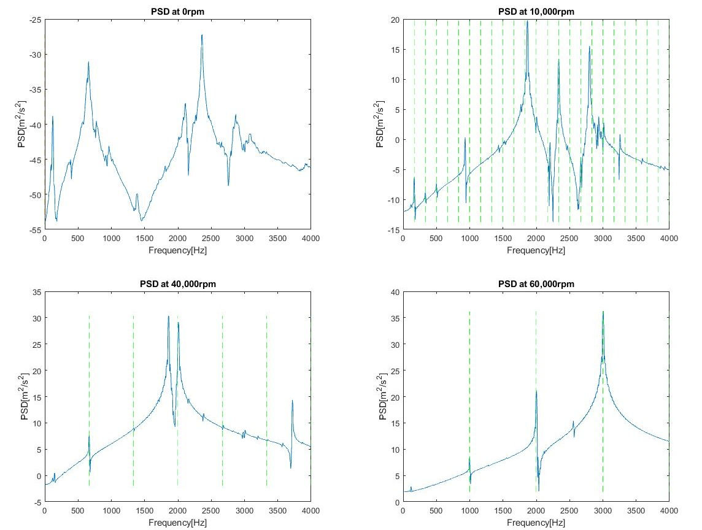
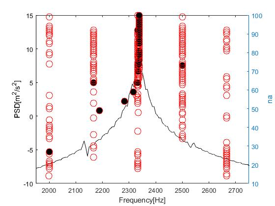

Non-contact vibration measurement and modal identification of a high-speed micromilling system using Laser Doppler Vibrometry, acoustic excitation, and output-only system identification.
The objective of this work was to identify the dynamic characteristics of a micromilling tool using non-contact vibration measurements under operational excitation.
A Laser Doppler Vibrometer was used to measure tool-tip response, while Operational Modal Analysis was applied to estimate natural frequencies and damping from measured vibration signals.
The experiments were conducted on an ALIO micromilling machine equipped for high-speed small-scale machining and vibration characterization.

Laser Doppler Vibrometry enabled vibration measurement at the tool without mounting a sensor directly on the small and lightweight cutting structure.
This avoided sensor mass loading and made the technique well suited for measuring high-frequency micromilling dynamics.

Broadband acoustic excitation was used to excite the micromilling structure while the LDV measured the resulting tool-tip velocity response.

The micromilling tool and support were modeled through structural vibration modes characterized by natural frequency and damping.
Modal identification from measured response data provided a direct bridge between physical vibration behavior and mathematical system representation.

The LDV measured the time-domain velocity response of the tool while acoustic excitation supplied broadband energy across the frequency range of interest.

Operational Modal Analysis relies on measured response rather than a directly measured excitation force.
The correlation function of the response was used as a representation of the system's free-decay behavior, enabling modal frequencies and damping to be estimated from output-only measurements.

The dominant mode identified from output-only vibration measurements closely matched the reference result obtained using conventional impact testing.
| Method | Dominant Frequency | Damping Ratio |
|---|---|---|
| Impact / EMA Reference | 2354.6 Hz | ~0.27% |
| Operational Modal Analysis | 2366.3 Hz | 0.1864% |
The dominant OMA frequency differed from the impact-test reference by approximately 0.5%, demonstrating that the non-contact output-only measurement captured the principal structural mode with close agreement.
As spindle speed increases, deterministic harmonics from spindle rotation appear in the measured spectrum and may overlap with structural vibration modes.

Harmonic components may be misidentified as structural modes or bias the estimated modal parameters, particularly when a harmonic frequency lies close to a natural frequency.
To distinguish structural dynamics from deterministic spindle harmonics, known harmonic frequencies were incorporated explicitly into the identification process.

Undamped spindle harmonics can dominate the spectrum and interfere with structural-mode identification.
Modified LSCE incorporated the known harmonic frequencies as undamped poles so that damped structural modes could be identified separately.
This research strengthened my experience in non-contact sensing, vibration measurement, signal processing, experimental system identification, and validation against physical reference measurements.
These methods later transferred naturally into sensor-driven robotics work, where physical-system behavior must similarly be inferred from noisy measurements.